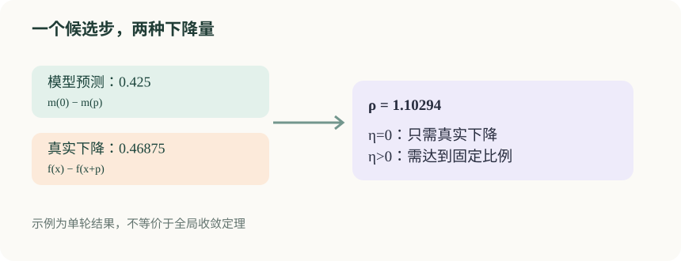

4.2.2 信赖域全局收敛：为什么接受阈值 η 改变结论
信赖域算法先判断模型能否可信地预测真实下降，再决定接受步长。允许所有真实下降的策略，与要求真实下降达到预测下降固定比例的策略，得到的全局收敛结论并不相同。
为什么要计算实际下降与预测下降
给定可微目标 f 与迭代点 xₖ，令 gₖ=∇f(xₖ)，选对称模型矩阵 Bₖ，并定义 mₖ(p)=f(xₖ)+gₖᵀp+½pᵀBₖp。子问题把 p 限制在 ‖p‖≤Δₖ 中。预测下降是 pred=mₖ(0)−mₖ(p)，实际下降是 ared=f(xₖ)−f(xₖ+p)。
只要 pred＞0，就定义质量比 ρₖ=ared/pred。ρ≈1 表示模型预测与真实行为相符；ρ≤0 表示真实目标没有下降。典型策略在 ρ≥η 时接受，其中 0≤η＜1 是事先固定的阈值。
模型偏差如何在半径缩小时变小
假设梯度在相关水平集附近 Lipschitz 连续，且 Bₖ 的范数一致有界。由 Taylor 展开可将模型误差 |mₖ(p)−f(xₖ+p)| 控制为 C‖p‖²。
若近似子问题解至少取得固定比例的 Cauchy 下降，则 pred≥c‖gₖ‖min(Δₖ,‖gₖ‖/‖Bₖ‖)。假设梯度一直远离零，缩小 Δₖ 后模型相对误差就趋于零，ρₖ 趋近 1。这解释了为什么持续拒绝最终与足够小半径相矛盾。

η=0 与 η>0，究竟得到什么结论
在适当的下降、光滑、模型矩阵有界、函数值下界及半径更新假设下，当 η=0（仅需真实下降即可接受）时，标准结论为 liminfₖ ‖gₖ‖=0：存在梯度趋零的子序列，但不能仅据此断言整个梯度序列趋零。
若固定 η＞0，即每次接受必须获得预测下降的固定正比例，则可证明更强的 ‖gₖ‖→0。关键区别在于接受步对真实函数下降量提供了统一的量化保证；它与仅要求 ared＞0 不同。
一维非二次例子：模型并非始终精确
取 f(x)=½(x−1)²+0.1(x−1)⁴，在 x=2 有 f=0.6、g=1.4、H=2.2。若 Δ=0.5，则一维正定二次模型给出 p=−0.5，预测下降 0.425，而真实下降 0.46875，ρ≈1.10294。
ρ 可以超过 1，因为模型可能低估真实下降；它不需要被限制在 [0,1] 中。这个单步例子只验证比值与半径的机制，不能替代上述关于无限迭代序列的证明。
哪些假设不能省略
证明需要一类具体的信赖域外层更新规则、模型充分下降、Bₖ 有界、目标在初始水平集上有下界，并对梯度在邻域内施加足够的连续性条件。即使梯度收敛到零，也不自动排除鞍点。
对有限精度实现还需检查 pred＞0、非有限函数值、半径过小以及不可区分步长。不要把实验中某一轮的 ρ 很接近 1 宣称为整个算法的全局收敛保证。
交互：调整参数，核查结论
把 Δ 从 0.1 增大到 1，观察预测下降、实际下降和 ρ 的变化；哪些半径会使完整 Newton 模型步变得可行？
实时计算
Python：复现结果与断言
以下代码只依赖 Python 标准库；它复核本页算例，并对假设不满足的输入进行明确处理。
"""Trust ratio for a nonquadratic, strongly convex teaching objective."""
def f(x):
t=x-1.0
return 0.5*t*t+0.1*t**4
def gradient(x):
t=x-1.0
return t+0.4*t**3
def hessian(x):
t=x-1.0
return 1.0+1.2*t*t
def trial(x, radius):
if radius <= 0:
raise ValueError("radius must be positive")
g, h=gradient(x), hessian(x)
p=max(-radius,min(radius,-g/h))
predicted=-g*p-0.5*h*p*p
if predicted <= 0:
raise RuntimeError("nonpositive predicted decrease")
actual=f(x)-f(x+p)
return p,predicted,actual,actual/predicted
if __name__ == "__main__":
p,pred,actual,rho=trial(2.0,0.5)
print("step",p,"pred",pred,"actual",actual,"rho",rho)
assert p == -0.5
assert abs(pred-0.425)<1e-12
assert abs(actual-0.46875)<1e-12
assert abs(rho-0.46875/0.425)<1e-12
assert trial(2.0,0.2)[3]>0